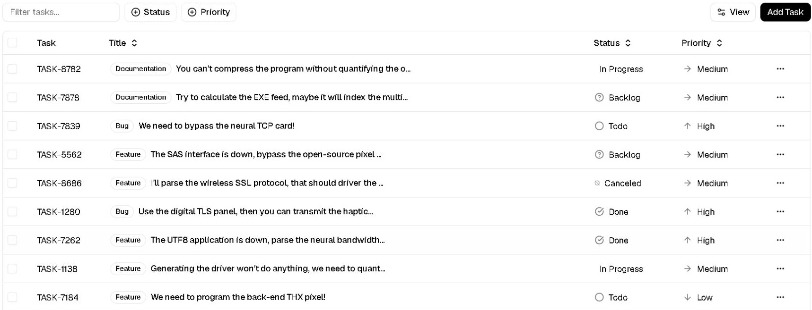

成分表，选一个你喜欢的方向
先选表格外观 A / B / C，再选左侧筛选方式 1 / 2。点击图片可放大，原站可以直接体验。
表格外观
三种外观均可用于相同的总表、绿色推荐表和红色避开表。


左侧筛选怎么选
两种方式都是选完立即更新，不需要提交按钮。


我更推荐 A + 1：表格清爽，左侧选项直接可见。你也可以选 B + 1 等其他组合。
先选表格外观 A / B / C，再选左侧筛选方式 1 / 2。点击图片可放大，原站可以直接体验。
三种外观均可用于相同的总表、绿色推荐表和红色避开表。
两种方式都是选完立即更新，不需要提交按钮。
我更推荐 A + 1：表格清爽，左侧选项直接可见。你也可以选 B + 1 等其他组合。